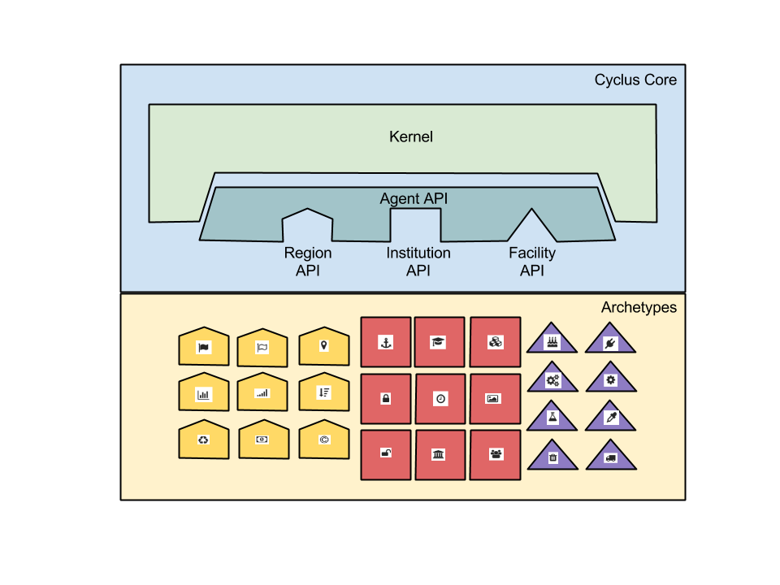
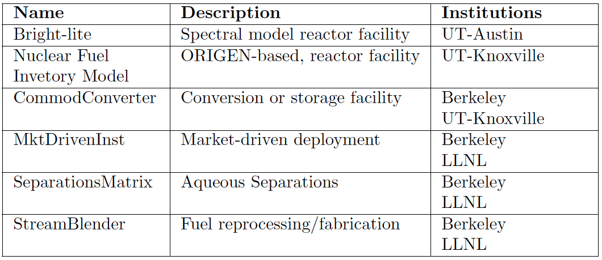

Advanced Reactors
and Fuel Cycles
Simulation of Multiple Physics
at Disparate Scales
Kathryn (Katy) Huff


Insights at Disparate Scales


\[\phi(E,\vec{r},\hat{\Omega},T)\]
\[\phi(E, x, y, z, \theta, \omega, T)\]
\[\sigma(x, i, E, T)\]

\[\gamma(f, i)\]

\[i\]

\[E\]

nuclear structure
Evaluated Nuclear Data Sets

\[\sigma(x, i, E, T)=\] nuclear structure + experiments
Experiments
Experiments

Nuclear Data is for Simulations

Simulation Methods
- Monte Carlo Methods
- Deterministic Methods
- Hybrid Methods
- Other keywords...
- lattice codes
- ray tracing algorithms
- acceleration schemes
- adjoint methods
- ...
Application Specific Data Processing
- Energy discretization
- multigroup
- pointwise
- piecewise linear continuous
- Angular quadratures
- Resonance integration
- ...
Molten Salt Reactor Designs

MSBR Full Core Simulation

(Robertson, 1979)
MSBR Full Core Simulation
Andrei Rykhlevskii

MSBR Full Core Simulation
Andrei Rykhlevskii

MSBR Full Core Simulation
Andrei Rykhlevskii

MSBR Full Core Simulation
Andrei Rykhlevskii

MSBR Full Core Simulation
Andrei Rykhlevskii

MSBR Full Core Simulation
Andrei Rykhlevskii

MSBR Full Core Simulation
Andrei Rykhlevskii

MSBR Full Core Simulation
Andrei Rykhlevskii

MSBR Full Core Simulation
Andrei Rykhlevskii

Reactor Kinetics
\[\sigma(E,\vec{r},\hat{\Omega},T,x,i)\]
\[k=1\]
Reactivity
\[ \begin{align} k &= \mbox{"neutron multiplication factor"}\\ &= \frac{\mbox{neutrons causing fission}}{\mbox{neutrons produced by fission}}\\ \rho &= \frac{k-1}{k}\\ \rho &= \mbox{reactivity}\\ \end{align} \]

\[\beta_i, \lambda_{d,i}\]
Point Reactor Kinetics
\[ \begin{align} p &= \mbox{ reactor power }\\ \rho(t,&T_{fuel},T_{cool},T_{mod}, T_{refl}) = \mbox{ reactivity}\\ \beta &= \mbox{ fraction of neutrons that are delayed}\\ \beta_j &= \mbox{ fraction of delayed neutrons from precursor group j}\\ \zeta_j &= \mbox{ concentration of precursors of group j}\\ \lambda_{d,j} &= \mbox{ decay constant of precursor group j}\\ \Lambda &= \mbox{ mean generation time }\\ \omega_k &= \mbox{ decay heat from FP group k}\\ \kappa_k &= \mbox{ heat per fission for decay FP group k}\\ \lambda_{FP,k} &= \mbox{ decay constant for decay FP group k}\\ T_i &= \mbox{ temperature of component i} \end{align} \]
Coupled Multi-Physics Analysis
Using the MOOSE framework and its Jacobian-Free Newton Krylov solver, severe accident neutronics and thermal hydraulics can be simulated beautifully for simple geometries and well studied materials. (below, INL BISON work.)

Moltres: Dr. Alexander Lindsay

Moltres Current Capabilities
- Navier Stokes + Multi-Group Neutron Diffusion + Kinetics
- arbitrary number of neutron energy groups
- arbitrary number of delayed neutron precursor groups
- neutron power coupled to salt temperature and flow
- Precursor capability requires discontinuous galerkin upwind scheme.
- Few group constants can be generated with SCALE-NEWT or Serpent
MSR Neutronics and TH Coupling


MSR Precursors


Insights at Disparate Scales
A Nuclear Fuel Cycle Simulation Framework
The Nuclear Fuel Cycle
Hundreds of discrete facilities mine, mill, convert, fabricate, transmute, recycle, and store nuclear material.

Fuel Cycle Metrics
- Mass Flow
- inventories, decay heat, radiotoxicity,
- proliferation resistance and physical protection (PRPP) indices.
- Cost
- levelized cost of electricity,
- facility life cycle costs.
- Economics
- power production, facility deployments,
- dynamic pricing and feedback.
- Disruptions
- reliability, safety,
- system robustness.
Current Simulators
- CAFCA (MIT)
- COSI (CEA)
- DANESS (ANL)
- DESAE (Rosatom)
- Evolcode (CIEMAT)
- FAMILY (IAEA)
- GENIUSv1 (INL)
- GENIUS v2 (UW)
- NFCSim (LANL)
- NFCSS (IAEA)
- NUWASTE (NWTRB)
- ORION (NNL)
- MARKAL (BNL)
- VISION (INL)
State of the Art
Performance
- Speed interactive time scales
- Fidelity: detail commensurate with existing challenges
- Detail: discrete material and agent tracking
- Regional Modeling: enabling international socio-economics
Beyond the State of the Art
Access
- Openness: for collaboration, validation, and code sustainability.
- Usability: for a wide range of user sophistication
Extensibility
- Modularity: core infrastructure independent of proprietary or sensitive data and models
- Flexibility with a focus on robustness for myriad potential developer extensions.
Extensibility
{kind=link}
Openness

Growing Ecosystem

...Well Beyond
Algorithmic Sophistication
- Efficient: memory-efficient isotope tracking
- Customizable: constrained fuel supply
- Dynamic: isotopic-quality-based resource routing
- Physics-based: fuel fungibility
Agent Based Systems Analysis
An agent-based simulation is made up of actors and communications between those actors.
Agent Based Systems Analysis
A facility might create material.

Agent Based Systems Analysis
It might request material.

Agent Based Systems Analysis
It might do both.

Agent Based Systems Analysis
Even simple fuel cycles have many independent agents.
Dynamic Resource Exchange
 \[N_i \subset N\]
\[N_i \subset N\]
Dynamic Resource Exchange
 \[N_j \subset N\]
\[N_j \subset N\]
Dynamic Resource Exchange
 \[N_i \cup N_j = N\]
\[N_i \cup N_j = N\]
Feasibility vs. Optimization
If a decision problem is in NP-C, then the corresponding optimization problem is NP-hard.
Multi-Commodity Transportation Formulation


Multi-Commodity Transportation Formulation
\[ \begin{align} \min_{x} z &= \sum_{i\in I}\sum_{j\in J} c_{i,j}x_{i,j} & \\ s.t & \sum_{i\in I_s}\sum_{j\in J} a_{i,j}^k x_{i,j} \le b_s^k & \forall k\in K_s, \forall s\in S\\ & \sum_{J\in J_r}\sum_{i\in I} a_{i,j}^k x_{i,j} \le b_r^k & \forall k\in K_r, \forall r\in R\\ & x_{i,j} \in [0,x_j] & \forall i\in I, \forall j\in J \end{align} \]
Dynamic Resource Exchange

Dynamic Resource Exchange

Dynamic Resource Exchange
mox
- waste
+ spent_fuel
mox_fresh_fuel
mox_spent_fuel
Dynamic Resource Exchange
Transition Analysis
- LWR to SFR
- $T_0 = 2015$
- $T_f <= 2215$
- $C_0 = 100$ GWe LWR
- Annual nuclear energy demand growth: 1%
- Legacy LWRs have either 60-year lifetimes or 80-year lifetimes.
- Spent LWR fuel reprocessed to fabricate FR fuel
- Spent FR fuel reprocessed to fabricate FR fuel
Transition Analysis

Power generated by reactor type.
Transition Analysis

Capacity deployed each year, by reactor type.
Detailed Metrics
Material Attractiveness
How Do We Know It's Right?

The Data Dilemma

Quality Control
“ Organized Skepticism. Scientists are critical: All ideas must be tested and are subject to rigorous structured community scrutiny.” - R.K. Merton, 1942
Unit Checking
In PyRK, the Pint package (pint.readthedocs.org/en/0.6/) is used keeping track of units, converting between them, and throwing errors when unit conversions are not sane.
Backing Up Files
- Good: hope
- Better: nightly emails
- Best: remote version control
Version Control Systems: cvs, svn, hg, git
Managing Changes
- Good: naming convention
- Better: clever naming convention
- Best: local version control
Version Control
Keeping track of versions of the code makes it possible to experiment without fear and placing the code online encourages use and collaboration.
Automated Documentation
Automated documentation creates a browsable website explaining the most recent version of the code.
Error Detection
“ The scientific method’s central motivation is the ubiquity of error—the awareness that mistakes and self-delusion can creep in absolutely anywhere and that the scientist’s effort is primarily expended in recognizing and rooting out error. ” - Donoho, 2009.
Error Detection
- Good: show results to experts
- Better: integration testing
- Best: unit test suite, continuous integration
Test Suite
The classes and functions that make up the code are tested individually for robustness using nose.
Continuous Integration
The tests are run every time a change is made to the repository online. The results are public. If a main branch has a failed test, I get an email.
Links
THE END
Katy Huff
katyhuff.github.io/2017-04-20-davis
Advanced Reactors and Fuel Cycles: Simulation of Multiple Physics at Disparate Scales by Kathryn Huff is licensed under a Creative Commons Attribution 4.0 International License.
Based on a work at http://katyhuff.github.io/2017-04-20-davis.
A Few of My Favorite Things
- C++, Python, Fortran
- xml, markdown, rst, $\LaTeX$
- Doxygen, sphinx
- CMake, conda, macports
- GoogleTest, nose
- hdf5, sqlite
- cython, boost, Coin
- jekyll, reveal.js, beamer
- yt, matplotlib, paraview

Transient Coupled Physics
A Nuclear Fuel Cycle Simulation Framework
Agent Based Systems Analysis
Hundreds of discrete facilities mine, mill, convert, fabricate, transmute, recycle, and store nuclear material.
Agent Based Systems Analysis
A facility might create material.
Agent Based Systems Analysis
It might request material.
Agent Based Systems Analysis
It might do both.
Agent Based Systems Analysis
Even simple fuel cycles have many independent agents.